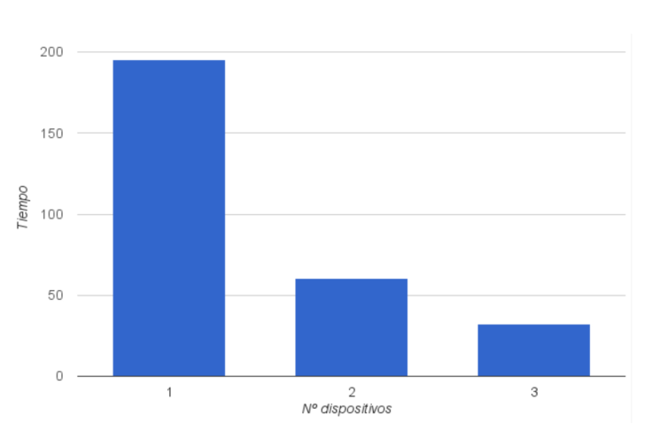

NodIO
Marco de desarrollo de aplicaciones para computación evolutiva voluntaria
XXIV Jornadas de Concurrencia y Sistemas Distribuidos (JCSD 2016)
Autores
- Israel Blancas: iblancasa@ugr.es
- J. J. Merelo: jmerelo@ugr.es
- Antonio Álvarez: analca3@correo.ugr.es
¿Qué es la computación voluntaria?
¿Qué son los algoritmos evolutivos?
¿Qué es NodIO?
Ventajas frente a otros
Experimentos
- Función "trap"
- Valores "asequibles"
- Pocos clientes
Múltiples dispositivos

Conclusiones
- Suficientemente rápido
- Más fácil de usar para los voluntarios que otros sistemas
- Independencia de la plataforma
- Mejora en las prestaciones
Trabajos futuros
- Nuevos experimentos
- Añadir ludificación
- Internacionalización
- Facilitar la creación de nuevos experimentos
Bibliografı́a
- Juan-J Merelo, Mario Garcı́a-Valdez, Pedro A Castillo, Pablo Garcı́a-Sánchez,
P Cuevas, and Nuria Rico. Nodio, a javascript framework for volunteer-based
evolutionary algorithms: first results. arXiv preprint arXiv:1601.01607, 2016.
- Juan-Julián Merelo, Pedro Castillo, Antonio Mora, Anna Esparcia-Alcázar, and
Vı́ctor Rivas-Santos. Nodeo, a multi-paradigm distributed evolutionary algorithm
platform in JavasSript. In Proceedings of the 2014 conference companion on Ge-
netic and evolutionary computation companion, pages 1155–1162. ACM, 2014.
-
M.G. Arenas, Pierre Collet, A.E. Eiben, M’ark Jelasity, J.J. Merelo, Ben Paechter,
Mike Preuß, and Marc Schoenauer. A framework for distributed evolutionary
algorithms. Number 2439 in Lecture Notes in Computer Science,LNCS. Springer-
Verlag, September 2002.